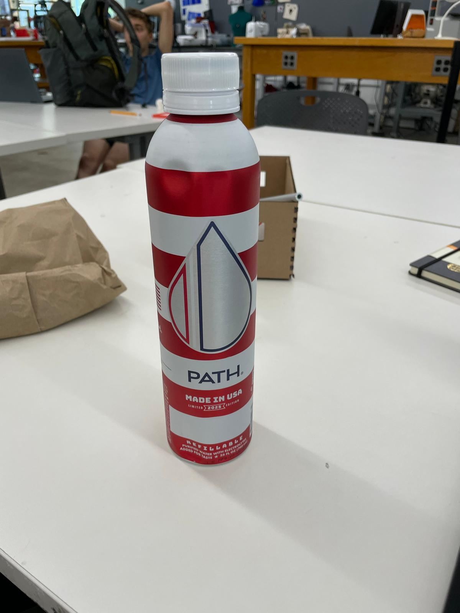

<nav class="navbar navbar-expand-sm navbar-dark bg-dark">
<div class="container-fluid justify-content-center">
<h2 class="nav-title text-white mb-0">PS70 Fall 2024</h2>
<div class="navbar-nav ms-4">
<a class="nav-link text-white" href="../index.html">Home</a>
<a class="nav-link text-white" href="../about.html">About</a>
</div>
</div>
</nav>
<div class="container py-4">
<h2 class="mb-4">Week 3: 3D Design & Printing</h2>
<img
src="image.png"
alt="Circuit drawing"
class="img-fluid rounded mb-4">
<h3>Documentation</h3>
<p style="font-size:1.25rem;">
For this week's assignment, I used Polycam to scan my water bottle.
</p>

<model-viewer
src="Scanned-Object.glb"
alt="Scanned water bottle"
camera-controls
auto-rotate
style="width:100%; max-width:600px; height:400px; margin: auto; display: block;"
></model-viewer>
<p class="mt-2">
<a download href="Scanned-Object.glb">
Download the scanned model (GLB)
</a>
</p>
<hr class="my-4">
<p style="font-size:1.25rem;">
Next, we had to 3D print an object not easily made subtractively. To get ahead on my final, I adapted a rubber‑band shooter frame (found <a href="https://makerworld.com/en/models/161573-21-shot-rubber-band-shooter#profileId-180250">here</a>) by removing its handle in Fusion before printing.
</p>
<ul>
<li><a download href="Gun_frame_v2.stl">Download STL file</a></li>
<li><a download href="ShooterFrame.gcode">Download GCODE file</a></li>
</ul>
</div>